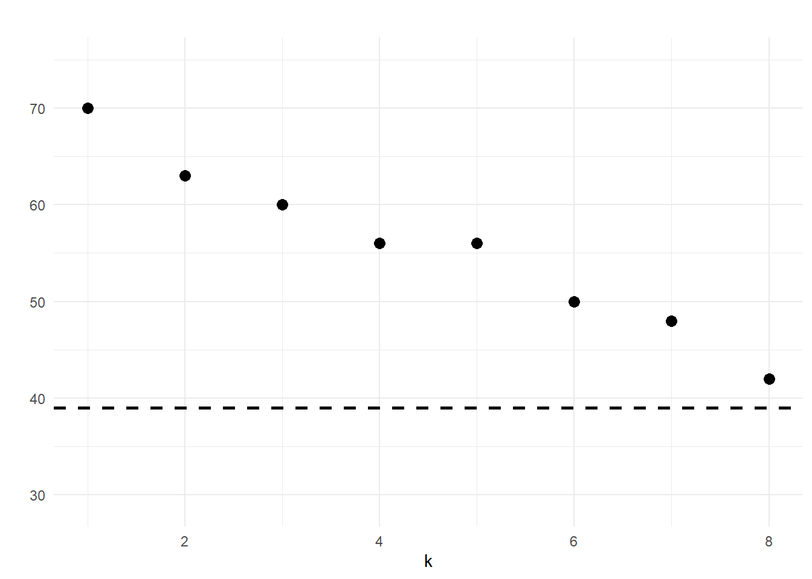

library(l1rotation)
fred <- read.csv(file.path(me, "fred.csv"), header = FALSE)
dim(fred)
#> [1] 206 166
head(fred[,1:7])
#> V1 V2 V3 V4 V5 V6 V7
#> 1 -0.93618 1.35640 -0.95510 -1.06600 -0.72831 1.163400 1.21780
#> 2 -0.48721 0.17344 -0.16558 0.68259 0.45872 1.285800 1.03640
#> 3 1.96610 1.82430 2.02730 0.91550 0.95781 -0.041807 0.85503
#> 4 0.30228 1.77050 0.97072 -1.48240 -1.31120 0.487860 1.94340
#> 5 1.27660 1.14510 1.49440 0.41494 0.11338 0.385080 0.67363
#> 6 -0.84318 0.75985 -0.78434 0.79395 0.84148 0.226120 0.31084Macroeconomic Indicators
Let’s now apply the l1rotation package to a large panel of US macroeconomic indicators, following one of the examples provided in Freyaldenhoven (2025). The below dataset is the FRED_QD data collected and maintained by Michael W. McCracken available here.
This specific example uses data from 1967Q1-2019Q1 and follows transformations recommended by McCracken and Ng (2016) to remove outliers. All aggregated data series are dropped as well. So the final cleaned sample used in the paper and below consists of only disaggregated stationary time series and can be found here. For more information, see the paper.
Let’s read it in.
Using the information criterion of Bai and Ng (2002), we determine that this data has 8 factors. To get an idea of the the information the data conveys, we can categorize each outcome or variable into one of 14 groups below:

Now, let’s try to estimate the 8 local factors.
set.seed(916)
fred_lf <- local_factors(fred, 8)
#> Finding rotations ■■■■ 9% | ETA: 44s
#> Finding rotations ■■■■■■■ 21% | ETA: 40s
#> Finding rotations ■■■■■■■■■ 25% | ETA: 39s
#> Finding rotations ■■■■■■■■■■ 30% | ETA: 39s
#> Finding rotations ■■■■■■■■■■■ 34% | ETA: 38s
#> Finding rotations ■■■■■■■■■■■■■ 39% | ETA: 35s
#> Finding rotations ■■■■■■■■■■■■■■ 43% | ETA: 33s
#> Finding rotations ■■■■■■■■■■■■■■■■ 49% | ETA: 30s
#> Finding rotations ■■■■■■■■■■■■■■■■■ 54% | ETA: 26s
#> Finding rotations ■■■■■■■■■■■■■■■■■■■ 60% | ETA: 22s
#> Finding rotations ■■■■■■■■■■■■■■■■■■■■■ 66% | ETA: 19s
#> Finding rotations ■■■■■■■■■■■■■■■■■■■■■■■ 73% | ETA: 15s
#> Finding rotations ■■■■■■■■■■■■■■■■■■■■■■■■■ 79% | ETA: 12s
#> Finding rotations ■■■■■■■■■■■■■■■■■■■■■■■■■■ 84% | ETA: 9s
#> Finding rotations ■■■■■■■■■■■■■■■■■■■■■■■■■■■■ 89% | ETA: 6s
#> Finding rotations ■■■■■■■■■■■■■■■■■■■■■■■■■■■■■■ 96% | ETA: 2s
variable_groups <- c(15, 27, 61, 69, 75, 109,
115, 128, 137, 143, 147, 148, 154)
fred_lf$rotated_plot +
ggplot2::geom_hline(yintercept = variable_groups, lty = "longdash")
Based on the plot above, the sparsity pattern in the estimated loading matrix makes the result interpretable. The first factor corresponds to group 6 and corresponds to price variables - suggesting interpretation of this factor as a price index. The second factor mainly affects interest rates, employment indicators, and industrial production while the third factor affects household balance sheets and stock markets. The picture is somewhat less clear for factors 4-8.
Finally, plotting the number of small loadings in each of the estimated loading vectors, we find evidence for the existence of local factors on this dataset.
fred_lf$small_loadings_plot